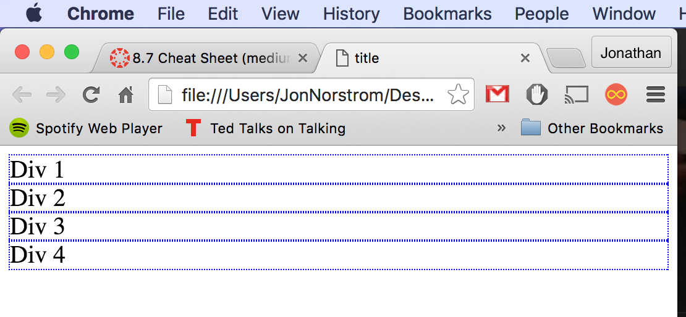
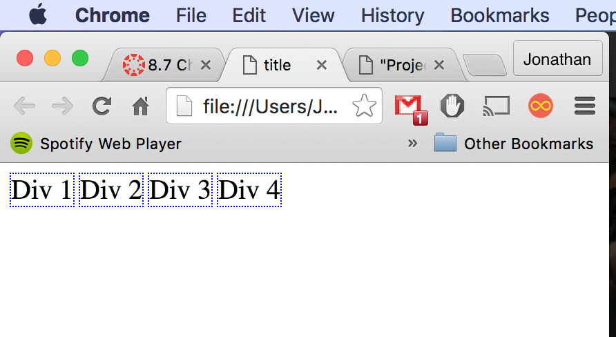
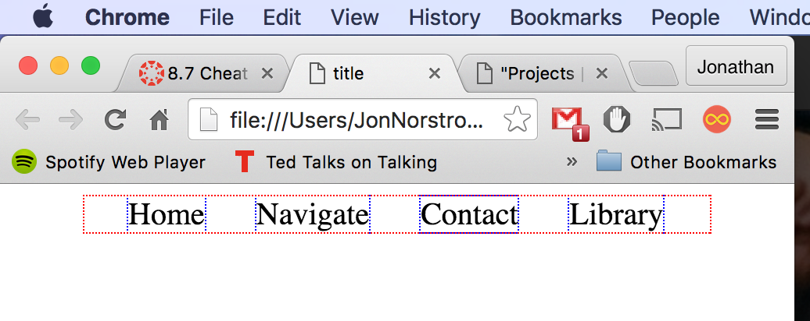

The first thing you must know about positioning a page is that all of your elements will fall just below the previous, all aligned to the top-left corner of the available space. Like this:
This is good to know becuase it's good to know exactly where your divs will be placed form the start. But what if you're doing a navigation bar? You'll need them to sit next to each other. The easiest way is to set the display: inline-block; attribute for each of your divs. Once you do this, you'll get something like:

Now that's starting to look like a navbar! Next we need to center it. There are so many ways to do this but I prefer to make a container div around my four options, and then center that div. I've outlined my container div in red so you can see.
Getting the container centered is so very easy. You just set width: [x]px; margin: auto; where [x] is just how many pixels wide you want your nav bar to be.